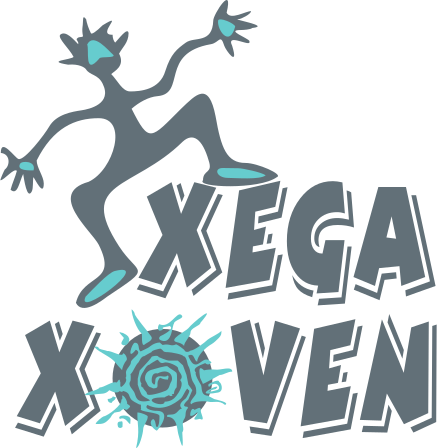
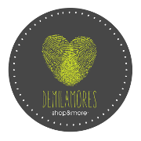

Charla-coloquio sobre Buenos Tratos y BDSM a cargo de Treno Mancebo, activista. Fue en la tienda erótica De Mil Amores (Río San Pedro 10, Oviedo) el martes 23 de junio a las 20:00 horas.
Los Buenos Tratos
Los Buenos Tratos son una apuesta por la mejor versión de nosotros/as mismos/as, así como por afianzar los mejores valores de nuestra sociedad. Entre ellos, la igualdad entre mujeres y hombres, la autonomía personal, la libertad, la resolución pacífica de los conflictos... Todos son potentes antídotos contra la violencia sexista, pero también poderosas herramientas para mejorar las relaciones interpersonales.
Apostar por los buenos tratos es una posibilidad al alcance de cada una y cada uno de nosotros. No podemos evitar los conflictos ya que forman parte de la convivencia, pero sí podemos elegir la manera de afrontarlos. Por eso los buenos tratos son la alternativa para gestionarlos de forma pacífica, teniendo en cuenta dos principios fundamentales: No hacer daño ni hacérselo a sí mismo/a y tratar a los demás como queremos ser tratados.
Esta forma de tratarnos deja huella en nuestras relaciones afectivas, particularmente en la pareja. Una huella que se multiplica, se expande... Huellas que, a su vez, van "marcando" el camino hacia una sociedad más justa e igualitaria.
BDSM
BDSM es un término creado para abarcar un grupo de prácticas y fantasías eróticas. Se trata de unas siglas formadas con las iniciales de las palabras Bondage, Disciplina, Dominación, Sumisión y Sadismo Masoquismo. Abarca, por tanto, a una serie de prácticas y aficiones sexuales relacionadas entre sí y vinculadas a lo que se denomina sexualidades no convencionales o alternativas.
A veces, en el habla cotidiana, se utilizan las expresiones "sado" o "sadomasoquismo" para referirse al BDSM, aunque ambos términos resultan equívocos, en parte por tratarse de palabras creadas por la psiquiatría para definir enfermedades mentales y en parte, porque las prácticas abarcadas por el BDSM son variadas y admiten gran cantidad de manifestaciones diferentes.
Como práctica erótica el BDSM se apoya siempre en el consenso de los/as participantes y se distingue radicalmente del sadismo criminal.
De Mil Amores
Río San Pedro 10, Oviedo
Ésta fue una actividad organizada por XEGA XOVEN, con la colaboración de De Mil Amores.
 